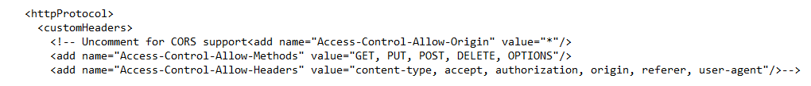

Gemini's web.config already contains the setting for Cross-Origin Request Sharing. By default it is commented out. To enable CORS, search for the word "CORS", uncomment the section, and recycle the App Pool in IIS
